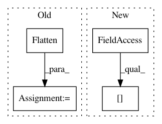

51bd1f486dbb44d63abfd891b163bcebd088f9a7,src/graph_transpiler/webdnn/frontend/keras.py,,_convert_flatten,#Any#Any#,499
Before Change
in_axes = x.order.axes.copy()
assert in_axes[0] == Axis.N
in_axes.remove(Axis.N)
flatten_opr = Flatten(None, in_axes=in_axes, out_axis=Axis.C)
y, = flatten_opr(x)
operator.outputs = [y]
After Change
assert len(operator.inputs) == 1
x = operator.inputs[0]
assert x.order.axes[0] == Axis.N
reshape_opr = Reshape(None, in_order=x.order, out_order=OrderNC, out_shape=[x.shape[0], mul(x.shape[1:])])
y, = reshape_opr(x)
operator.outputs = [y]
In pattern: SUPERPATTERN
Frequency: 4
Non-data size: 4
Instances
Project Name: mil-tokyo/webdnn
Commit Name: 51bd1f486dbb44d63abfd891b163bcebd088f9a7
Time: 2017-06-29
Author: hidaka@mi.t.u-tokyo.ac.jp
File Name: src/graph_transpiler/webdnn/frontend/keras.py
Class Name:
Method Name: _convert_flatten
Project Name: mil-tokyo/webdnn
Commit Name: 51bd1f486dbb44d63abfd891b163bcebd088f9a7
Time: 2017-06-29
Author: hidaka@mi.t.u-tokyo.ac.jp
File Name: src/graph_transpiler/webdnn/frontend/keras.py
Class Name:
Method Name: convert_layer_global_average_pooling2d
Project Name: jhfjhfj1/autokeras
Commit Name: b1bfd16945a658d02847209e46a2ba8d72b456e1
Time: 2019-07-01
Author: jhfjhfj1@gmail.com
File Name: autokeras/hypermodel/hyper_block.py
Class Name: RNNBlock
Method Name: build